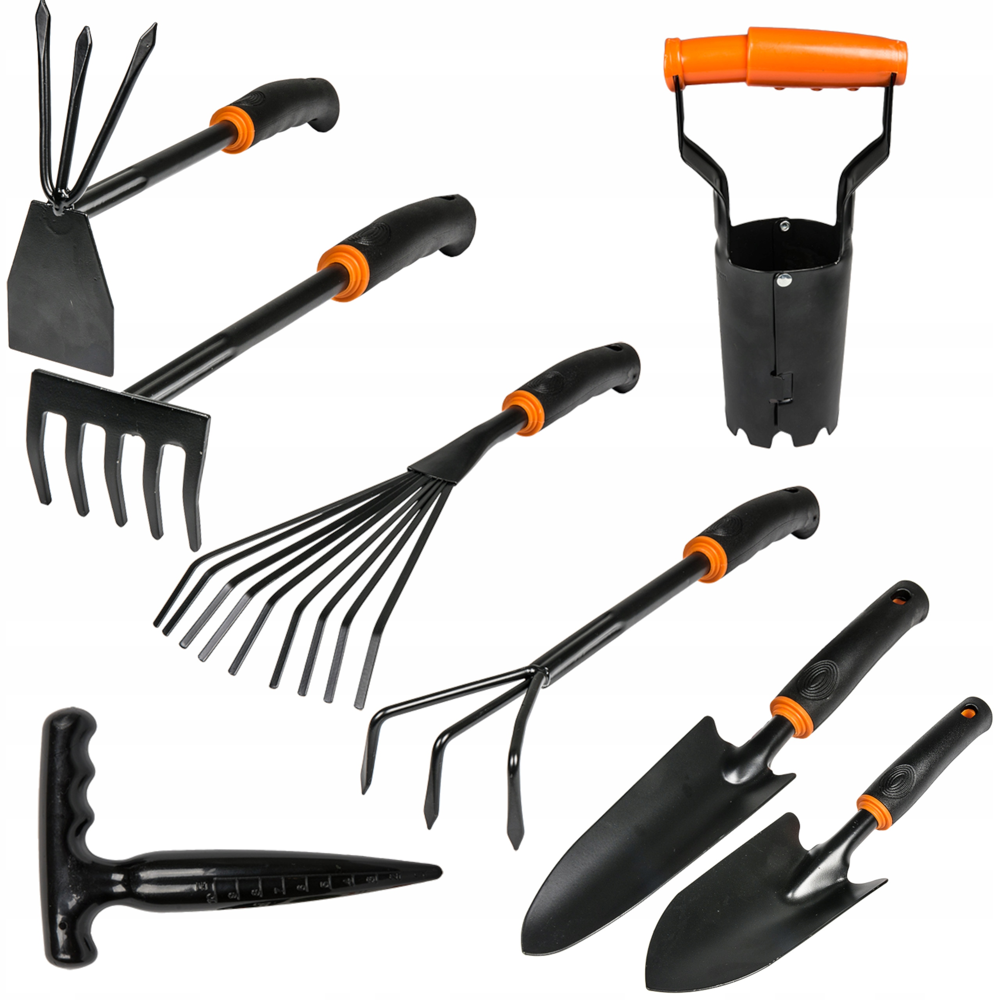
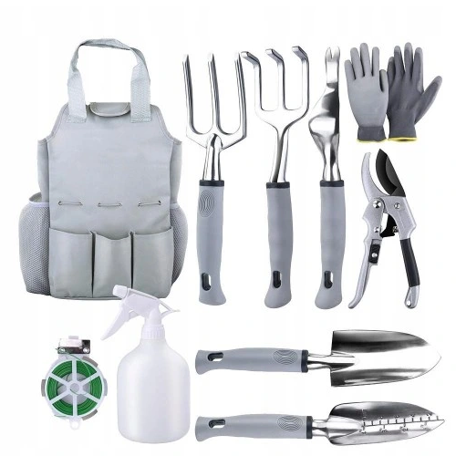
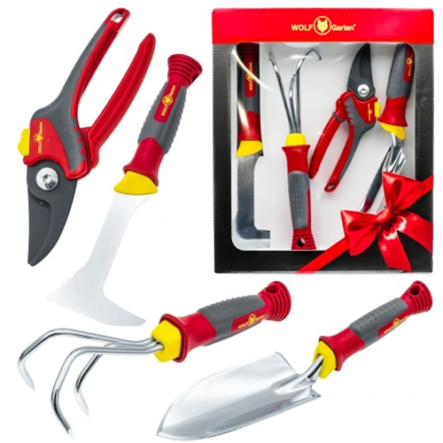

| Widełki | Opis |
|---|---|
|  |
Zestaw narzędzi ogrodniczych BradasZestaw poręcznych narzędzi ogrodniczych z serii DE LUXE, przeznaczonych do różnego rodzaju prac w ogrodzie i na działce. Wszystkie narzędzia wykonane są z mocnej stali. Posiadają również ergonomiczne, wygodne uchwyty z miękkim uchwytem. Zestaw składa się z 8 narzędzi ogrodowych. 79.99 zł |
|  |
Zestaw narzędzi ogrodniczych DAAECWykonany z wysokiej jakości materiał ze stopu aluminium, trwały, sprawia, że ogrodnictwo jest łatwiejsze i przyjemniejsze. Z organizerem narzędzi ogrodowych Tote ułatwia przenoszenie i chroni narzędzia ogrodowe. Miły prezent urodzinowy na parapetówkę dla miłośników ogrodnictwa. Idealny do różnorodnych zadań, w tym kopania, pielenia, grabienia, spulchniania gleby, napowietrzania, przesadzania, przycinania i podlewania. Korzystając z tych ręcznych narzędzi ogrodniczych, po prostu zacznij swoje hobby ogrodnicze, aby uprawiać warzywa, rośliny, kwiaty i cokolwiek chcesz. 149.99 zł |
|  |
Zestaw narzędzi ogrodniczych Wolf GartenUniwersalny zestaw doskonały dla każdego początkującego ogrodnika oraz doświadczonego pasjonata ogrodu, szukającego uzupełnienia swojej kolekcji narzędzi, w którego skład wchodzą takie narzędzia ogrodnicze jak: spulchniacz, łopatka do sadzenia, skrobak do szczelin oraz sekator nożycowy. 139.99 zł |